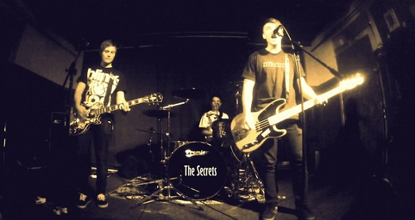
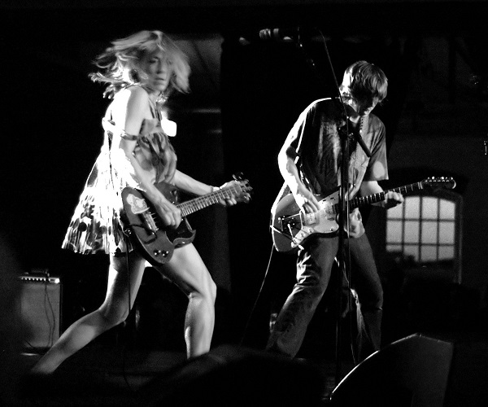
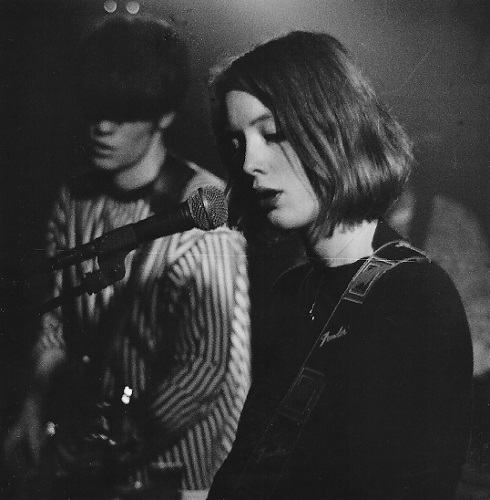
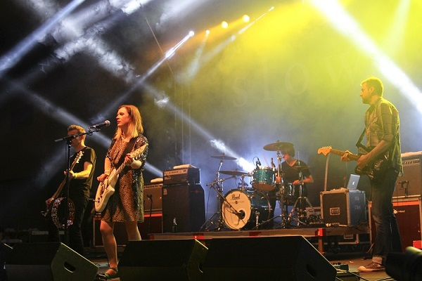

The History of Alternative Rock

While rock had been prominent for decades by the 1980s, new scenes started to develop outside of the mainstream. These scenes,
involving shoegaze, britpop, grunge, and so on, were new twists on the punk rock genre that had become so huge in the 1970s and
laid dormant the decade afterwards. Most of these spinoffs followed suit, though greatly rose in popularity at the start of the 1990s.
Shortly beforehand, R.E.M.'s continued underground success started to bubble over the top in the late 80s, leading to two
hit singles for them on the US charts. Their popularity and exposure grew well into the mid‐90s.
Shoegaze, goth Rock and grunge, especially the latter with Nirvana's "Smells Like Teen Spirit", helped to continue this success,
with britpop following soon after with bands such as Oasis and Blur. R.E.M., Pearl Jam, The Cure, Jane's Addiction, Stone Temple
Pilots, Alice in Chains, and Soundgarden were notable as well, most notching huge hits and helping to grow the scene's influence.
As the 90s went on, the ironic, rebellious attitude of the alt rock genre started to focus in on it. Although there were hits within
the alt rock and post grunge genres well after this, one of the last really notable ones was Harvey Danger's Flagpole Sitta, a joke
of a song pointing out the inflated, mainstream appeal of its forerunners. It seemed the sentiment gradually caught on and spelled out
the mainstream irrelevance of the genre as a whole, yet its influence lives on in rock to this day.

There were three major factors that led to the incline of popularity for alternative rock. The first was when the Dead Kennedys created
Alternative Tentacles, an indie label established in the late 70s, that went on to release many records influential to the genre. This included
early work from the Butthole Surfers. The second factor was the rising success of R.E.M., a band who flourished via the independent labels and
fanzines cropping up, as well as from college radio. Due to this in the late 80s they scored two major hits on the US hot 100 charts, "The One
I Love" and "Stand". The last factor was the creation of the alternative songs chart by Billboard, a list of the forty most played songs on alternative
and modern rock stations on any given week. As the genre expanded, it later became known as the Modern Rock Tracks chart and, most recently, the
Alternative Airplay chart.
Despite the growing influence and success, alternative rock remained an underground movement throughout the 80s. Notable American bands at this time,
in addition to R.E.M., were The Dream Syndicate, 10,000 Maniacs, and many others.
Britpop had a long string of subgenres that developed during the same
period, starting with post-punk spinning off into goth rock in the late‐70s. Bauhaus' "Bela Lugosi's Dead" is widely considered to
be the proper kick off to the subgenre, with The Cure's albums helped them to develop a large cult following. The Smith's became the pivotal band
of british alternative rock though, most notable for how contrary to the 80s's signature sound they were. They clearly struck a cord with audiences as well.
The shoegaze movement came later on in the 80s, adopting a more harsh, yet ethereal, sound popularized by My Bloody Valentine and Slowdive, with other bands, such
as Chapterhouse and Lush, making notable entries into the genre closer to the turn of the decade.

Jane's Addition, 10,000 Maniacs, Red Hot Chili Peppers, Nirvana, and R.E.M. either established or hit mainstream appeal by 1991. The biggest hit between them
was the aforementioned "Smells Like Teen Spirit", which made it clear that the music landscape was set to change. It wasn't immediate, but the song
essentially acted as a send off to hair metal and new wave that was so prominent during the 80s and early 90s. Grunge took over during the next few years, seeing major
success for Nirvana, Soundgarden, Alice in Chains, Stone Temple Pilots, and Pearl Jam, among many many others; the most prominent of these bands were based in Seattle, the
source of the movement.
Britpop had its major crossover appeal during this same time, spearheaded by Oasis who dominated the subgenre with "(What's the Story) Morning Glory
?". Blur, who had a rivalry with Oasis, Pulp, and Suede also enjoyed much success during this time. Unfortunately, the release of Oasis' album, "Be
Here Now", while successful, seemed to mark the end of the subgenre's prominence due to its overproduction and bloat.
Given alternative rock started as an underground genre, it's no surprise that the indie scene was going strong as well. With Nirvana's breakthrough, it formed
a distinct following due to rejecting the mainstream appeal of the more popular bands. Lo‐fi was a fantastic example of how this movement sought to maintain its homegrown
roots, employing a DIY style to crafting the music rather than leaning on the gloss and polish of major producers. Many of its participants harbored distrust of
the corporate structure encorporating alt rock into the charts. Pavement, Superchunk, Fugazi, and Sleater‐Kinney were the main performers within this subgenre, though Beck
and Liz Phair later brought the aesthetic and appeal of this subgenre to mainstream audiences in the mid 90s.
Post‐grunge followed suit in the late 90s, having been influenced more by the popular strands of alt rock than by the indie purists. Due to the often more polish and radio
friendly sound of this subgenre, the term was used early on to imply a band was musically derivative. Bush, Collective Soul, Foo Fighters, Creed, and Nickelback were the
major artists here, with the last two going on to huge success within the 2000s.
Other spin‐offs included bands like Smashing Pumpkins, which fused heavy metal with progressive rock, helping to legitimize the truer sound of alt rock on the radio,
as well as No Doubt, Sublime, and the Mighty Mighty Bosstones, who were major faces of the ska-punk subgenre.

Bands such as Franz Ferdinand, The White Stripes, and The Strokes saw much success in the early 2000s in the midst of the post‐punk revival, a mixture of post‐punk and new wave, hit the airwaves.
The Killers and Yeah Yeah Yeahs, among many other alternative rock bands, followed in their foot steps, seeing many hits racked up on the charts despite shifting trends,
though success for any given band seemed limited to a few hits at most. All the same it uprooted the dominance of rap‐rock and nu‐metal at the time.
Most current examples, past 2010, are confined within the indie rock genre. The success of alternative rock has definitely faded over time despite it's core fanbase
remaining loyal. Legacy bands see success touring and the occasional hit is given out to new and old acts alike, but the influence of the genre has greatly waned in
popular music, being replaced by dance, rap, and 70s and 80s throwback tunes instead. Within indie rock, the influences of those late 80s and early 90s bands can still be
seen, with many new and fresh takes available for the listener's to this day! Thanks to recent streaming services and platforms like Bandcamp, it's easier than
ever to discover and support bands. Go find a band or ten to enjoy and let alt rock live on!
|
.jpg){kind=link}
{kind=link}
{kind=link}
{kind=link}
{kind=link}